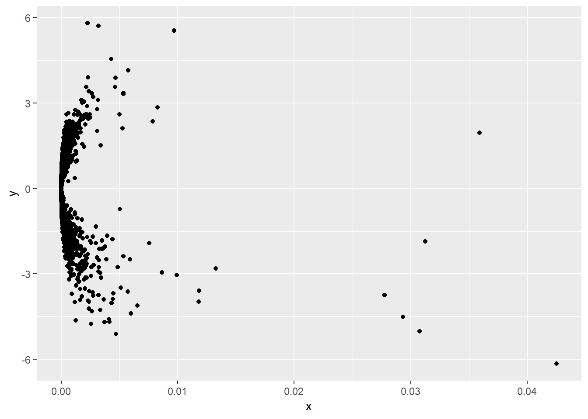

library(tidyverse); library(tidymodels); library(DT)
nb_data <- readRDS("nb_data.rds")Unlike modern modelling technique, linear regression is an explainable model. We can clearly identify the varaibles and their influence on the model.
Various fields require explainable model, e.g. regulatary requirements, government law etc.
Linear regression requires certain assumptions of data. Some of these assumptions can be tested prior the model and some post
Data should be normally distrubuted - We have already seen in Data cleaning that the log transformed values of house price is normally distributed.
Observation should be above 30 - We have much above the requirement.
Hetroskadasticity - This will be tested post model, it simply means that the variance between predicted prices and residuals should be equal at different intervals.
set.seed(42)
train_test_split <- initial_split(nb_data)
nb_train <- training(train_test_split)
nb_test <- testing(train_test_split)
rec_obj <- recipe(HousePriceinK ~ ., data = nb_train) %>%
step_knnimpute(all_predictors()) %>%
#step_dummy(all_predictors(), -all_numeric()) %>%
step_log(all_outcomes())
prepare_rec <- rec_obj %>% prep(training = nb_train)
train_data <- prepare_rec %>%
bake(nb_train) %>%
select(-HousePriceinK, everything())
test_data <- prepare_rec %>%
bake(nb_train) %>%
select(-HousePriceinK, everything())
x_col <- 1:19
y_col <- 20 train_data %>%
ggplot(aes(HousePriceinK, Area)) +
geom_point() +
geom_smooth(method = "lm", se = FALSE)GGally::ggpairs(train_data)lm_model <- lm(HousePriceinK ~ ., data = train_data)
summary(lm_model)##
## Call:
## lm(formula = HousePriceinK ~ ., data = train_data)
##
## Residuals:
## Min 1Q Median 3Q Max
## -2.36341 -0.20328 0.02468 0.22589 2.27115
##
## Coefficients:
## Estimate Std. Error t value
## (Intercept) 1.890e+02 1.072e+01 17.627
## Lat -2.142e+00 7.452e-02 -28.740
## Long -1.922e+00 1.469e-01 -13.081
## NegotiableNon-negotiable -1.806e-02 1.501e-02 -1.203
## Area 6.314e-04 2.282e-05 27.666
## NoofBedrooms 2.124e-01 1.369e-02 15.515
## NoofBathrooms 1.268e-01 1.307e-02 9.698
## FloorTypeMarble/Granite 2.008e-01 2.811e-02 7.145
## FloorTypeMosaic 2.393e-01 3.505e-02 6.826
## FloorTypeVitrified Tiles 1.806e-01 2.619e-02 6.895
## FloorTypeWooden 3.007e-01 7.837e-02 3.837
## NoofBalconies 1.562e-02 5.477e-03 2.853
## BldgtypeGated Community Villa 2.344e-01 1.762e-01 1.330
## BldgtypeIndependent Floor/Builder Floor -2.678e-01 3.099e-02 -8.641
## BldgtypeIndependent House/Villa -5.916e-01 2.555e-02 -23.153
## Age1-3 years old -1.073e-01 2.746e-02 -3.907
## Age3-5 years old -1.536e-01 2.320e-02 -6.621
## Age5-10 years old -1.546e-01 1.659e-02 -9.321
## AgeNewly Constructed -4.775e-02 2.279e-02 -2.095
## AgeUnder Construction 5.320e-02 3.985e-02 1.335
## OwnedByRented 3.352e-02 7.871e-02 0.426
## Maint_sqft 2.367e-02 2.009e-03 11.783
## FurnishedSemi -4.787e-02 1.629e-02 -2.938
## FurnishedUnfurnished -1.681e-01 1.708e-02 -9.844
## FacingNorth 1.208e-02 1.617e-02 0.747
## FacingNorth-East -3.704e-03 2.321e-02 -0.160
## FacingNorth-West -1.694e-02 3.824e-02 -0.443
## FacingSouth -6.081e-03 1.973e-02 -0.308
## FacingSouth-East 1.567e-03 3.402e-02 0.046
## FacingSouth-West 6.070e-02 3.989e-02 1.522
## FacingWest 2.182e-02 1.643e-02 1.328
## OnFloor 3.133e-03 1.543e-03 2.031
## NooffloorsinBldg 1.764e-03 1.141e-03 1.546
## ParkingBike and Car 1.539e-01 1.722e-02 8.933
## ParkingCar 2.141e-01 2.510e-02 8.527
## ParkingNone 1.989e-02 2.049e-02 0.971
## PowerBackupNone 1.616e-02 1.277e-02 1.266
## PowerBackupPartial 4.661e-03 1.670e-02 0.279
## WaterSupplyBoth 2.081e-01 5.380e-02 3.869
## WaterSupplyCorporation 1.768e-01 5.349e-02 3.306
## Pr(>|t|)
## (Intercept) < 2e-16 ***
## Lat < 2e-16 ***
## Long < 2e-16 ***
## NegotiableNon-negotiable 0.228942
## Area < 2e-16 ***
## NoofBedrooms < 2e-16 ***
## NoofBathrooms < 2e-16 ***
## FloorTypeMarble/Granite 1.03e-12 ***
## FloorTypeMosaic 9.80e-12 ***
## FloorTypeVitrified Tiles 6.07e-12 ***
## FloorTypeWooden 0.000126 ***
## NoofBalconies 0.004353 **
## BldgtypeGated Community Villa 0.183448
## BldgtypeIndependent Floor/Builder Floor < 2e-16 ***
## BldgtypeIndependent House/Villa < 2e-16 ***
## Age1-3 years old 9.46e-05 ***
## Age3-5 years old 3.94e-11 ***
## Age5-10 years old < 2e-16 ***
## AgeNewly Constructed 0.036220 *
## AgeUnder Construction 0.181922
## OwnedByRented 0.670237
## Maint_sqft < 2e-16 ***
## FurnishedSemi 0.003318 **
## FurnishedUnfurnished < 2e-16 ***
## FacingNorth 0.455233
## FacingNorth-East 0.873223
## FacingNorth-West 0.657778
## FacingSouth 0.757978
## FacingSouth-East 0.963258
## FacingSouth-West 0.128175
## FacingWest 0.184359
## OnFloor 0.042307 *
## NooffloorsinBldg 0.122116
## ParkingBike and Car < 2e-16 ***
## ParkingCar < 2e-16 ***
## ParkingNone 0.331670
## PowerBackupNone 0.205735
## PowerBackupPartial 0.780226
## WaterSupplyBoth 0.000111 ***
## WaterSupplyCorporation 0.000952 ***
## ---
## Signif. codes: 0 '***' 0.001 '**' 0.01 '*' 0.05 '.' 0.1 ' ' 1
##
## Residual standard error: 0.3906 on 4941 degrees of freedom
## Multiple R-squared: 0.7512, Adjusted R-squared: 0.7492
## F-statistic: 382.5 on 39 and 4941 DF, p-value: < 2.2e-16#broom::tidy(lm_model) %>% datatable(rownames = FALSE, options = list(dom = "t"))Inorder to identify the important variables we check the pvalues (Pr(>|t|) column).
tibble(
Actual = train_data$HousePriceinK %>% exp(),
estimate = predict(lm_model, data = train_data[x_col]) %>% exp()
) %>%
rmse(Actual, estimate)## [1] 14600.14anova(lm_model)## Analysis of Variance Table
##
## Response: HousePriceinK
## Df Sum Sq Mean Sq F value Pr(>F)
## Lat 1 178.74 178.74 1171.2446 < 2.2e-16 ***
## Long 1 42.57 42.57 278.9523 < 2.2e-16 ***
## Negotiable 1 1.19 1.19 7.7782 0.005308 **
## Area 1 1638.42 1638.42 10736.4358 < 2.2e-16 ***
## NoofBedrooms 1 80.67 80.67 528.6347 < 2.2e-16 ***
## NoofBathrooms 1 21.70 21.70 142.2046 < 2.2e-16 ***
## FloorType 4 34.34 8.58 56.2520 < 2.2e-16 ***
## NoofBalconies 1 1.22 1.22 7.9938 0.004713 **
## Bldgtype 3 178.34 59.45 389.5481 < 2.2e-16 ***
## Age 5 16.29 3.26 21.3522 < 2.2e-16 ***
## OwnedBy 1 0.01 0.01 0.0682 0.793947
## Maint_sqft 1 30.65 30.65 200.8303 < 2.2e-16 ***
## Furnished 2 23.68 11.84 77.6012 < 2.2e-16 ***
## Facing 7 0.69 0.10 0.6436 0.720071
## OnFloor 1 2.47 2.47 16.1782 5.851e-05 ***
## NooffloorsinBldg 1 0.50 0.50 3.2559 0.071228 .
## Parking 3 21.52 7.17 47.0168 < 2.2e-16 ***
## PowerBackup 2 0.22 0.11 0.7356 0.479247
## WaterSupply 2 2.99 1.50 9.8062 5.619e-05 ***
## Residuals 4941 754.01 0.15
## ---
## Signif. codes: 0 '***' 0.001 '**' 0.01 '*' 0.05 '.' 0.1 ' ' 1lm_model_2 <- lm(HousePriceinK ~ . -OwnedBy
-Facing -NooffloorsinBldg
-PowerBackup, data = train_data)
anova(lm_model_2)## Analysis of Variance Table
##
## Response: HousePriceinK
## Df Sum Sq Mean Sq F value Pr(>F)
## Lat 1 178.74 178.74 1171.7790 < 2.2e-16 ***
## Long 1 42.57 42.57 279.0796 < 2.2e-16 ***
## Negotiable 1 1.19 1.19 7.7817 0.005298 **
## Area 1 1638.42 1638.42 10741.3345 < 2.2e-16 ***
## NoofBedrooms 1 80.67 80.67 528.8759 < 2.2e-16 ***
## NoofBathrooms 1 21.70 21.70 142.2695 < 2.2e-16 ***
## FloorType 4 34.34 8.58 56.2776 < 2.2e-16 ***
## NoofBalconies 1 1.22 1.22 7.9975 0.004703 **
## Bldgtype 3 178.34 59.45 389.7259 < 2.2e-16 ***
## Age 5 16.29 3.26 21.3619 < 2.2e-16 ***
## Maint_sqft 1 30.65 30.65 200.9369 < 2.2e-16 ***
## Furnished 2 23.69 11.84 77.6518 < 2.2e-16 ***
## OnFloor 1 2.44 2.44 16.0191 6.362e-05 ***
## Parking 3 21.55 7.18 47.0857 < 2.2e-16 ***
## WaterSupply 2 3.08 1.54 10.0798 4.279e-05 ***
## Residuals 4952 755.35 0.15
## ---
## Signif. codes: 0 '***' 0.001 '**' 0.01 '*' 0.05 '.' 0.1 ' ' 1tibble(
Actual = train_data$HousePriceinK %>% exp(),
estimate = predict(lm_model_2, data = train_data[x_col]) %>% exp()
) %>%
rmse(Actual, estimate)## [1] 14635.28df <- broom::augment(lm_model_2) %>%
mutate(index = row_number())https://www.statmethods.net/stats/rdiagnostics.html
https://www.r-bloggers.com/regression-diagnostics-with-r/
https://data.library.virginia.edu/diagnostic-plots/
plot(lm_model_2)a <- tibble(
x = fitted.values(lm_model_2),
y = residuals(lm_model_2)
) %>%
ggplot(aes(sample = y)) + geom_qq() + geom_qq_line()
b <- tibble(
x = fitted.values(lm_model_2),
y = residuals(lm_model_2)
) %>%
ggplot(aes(y)) + geom_histogram()
gridExtra::grid.arrange(a, b, ncol = 2)## `stat_bin()` using `bins = 30`. Pick better value with `binwidth`.Means something is missing, probably interaction
tibble(
x = fitted.values(lm_model_2),
y = residuals(lm_model_2)
) %>%
ggplot(aes(x, y)) +
geom_point() +
labs(x = "Fitted Values", y = "Residuals", title = "Hetroskadasticity")https://www.r-bloggers.com/regression-diagnostic-plots-using-r-and-plotly/
https://stackoverflow.com/questions/48964719/how-to-remove-outliers-from-cooks-distance-in-r
#If this is less than 4 then keep else discard
#plot(cooks.distance(lm_model_2))
tibble(
x = cooks.distance(lm_model_2),
y = rstandard(lm_model_2)
) %>%
ggplot(aes(x, y)) +
geom_point()
#?cooks.distanceVIF is in danger zone if bigger than 10 and tolerance if less than 0.1
car::vif(lm_model_2)## GVIF Df GVIF^(1/(2*Df))
## Lat 1.031877 1 1.015814
## Long 1.030291 1 1.015033
## Negotiable 1.008291 1 1.004137
## Area 3.820927 1 1.954719
## NoofBedrooms 3.887328 1 1.971631
## NoofBathrooms 3.281660 1 1.811535
## FloorType 1.154289 4 1.018097
## NoofBalconies 1.191067 1 1.091360
## Bldgtype 1.242399 3 1.036836
## Age 1.451194 5 1.037941
## Maint_sqft 1.134044 1 1.064915
## Furnished 1.206091 2 1.047961
## OnFloor 1.373204 1 1.171838
## Parking 1.234886 3 1.035789
## WaterSupply 1.054138 2 1.013268residuals from a linear model are correlated or not. A stat of 2 is bad -approx.
car::durbinWatsonTest(lm_model_2)## lag Autocorrelation D-W Statistic p-value
## 1 -0.02249286 2.044448 0.116
## Alternative hypothesis: rho != 0ALready done!